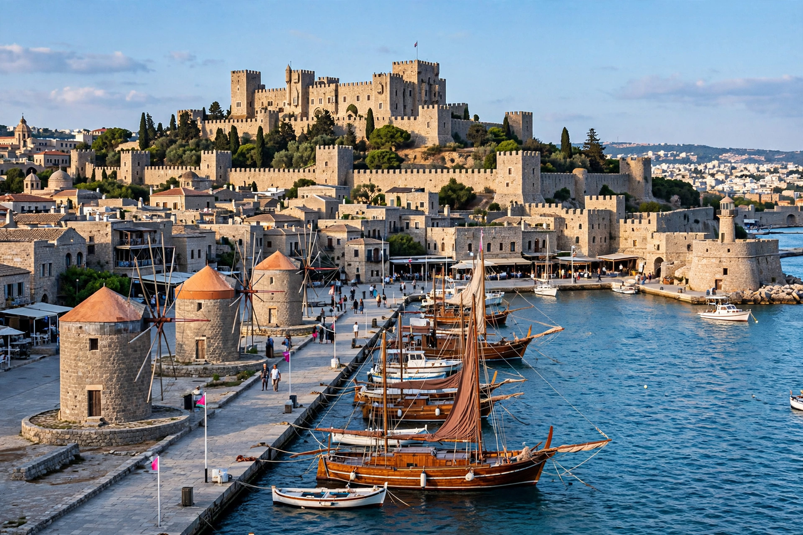

| Rhodes | |
|---|---|
 | |
| Country | Greece |
| Region | South Aegean (Dodecanese) |
| Area | 1,401 km² (largest Dodecanese island) |
| Population | about 125,000 (2021) |
| Capital | Rhodes (city) |
Rhodes (Greek: Ρόδος, Ródos) is the largest of Greece's Dodecanese islands and historically the most important. Nicknamed "the island of the Knights", it sits in the eastern Aegean Sea just off the coast of Turkey and has been a crossroads of Greek, Roman, Byzantine, Crusader, Ottoman and Italian rule. Its medieval old town is a UNESCO World Heritage Site.
In 408 BCE the island's three city-states united to found the planned city of Rhodes, which grew rich on trade and became a major maritime and cultural power of the Hellenistic world, famed for its schools of rhetoric and sculpture. Its patron god was Helios, and after the city withstood Demetrius Poliorcetes' great siege of 305–304 BCE, the Rhodians sold his abandoned siege engines to finance the Colossus of Rhodes (completed c. 280 BCE), a 33-metre bronze statue of Helios that stood for 56 years until toppled by an earthquake.
The Knights Hospitaller seized Rhodes in 1309 and fortified it brilliantly, repelling sieges in 1444 and 1480 before Suleiman the Magnificent took the island in 1522 after a six-month siege, granting the knights safe passage to Malta. Ottoman rule lasted until 1912, when Italy occupied the Dodecanese; Rhodes was formally united with Greece in 1948.
Tourism dominates the modern economy, drawn by the walled medieval city — with its Street of the Knights and Palace of the Grand Master — the acropolis of Lindos, and long sunny beaches. Rhodes receives roughly 300 days of sunshine a year.